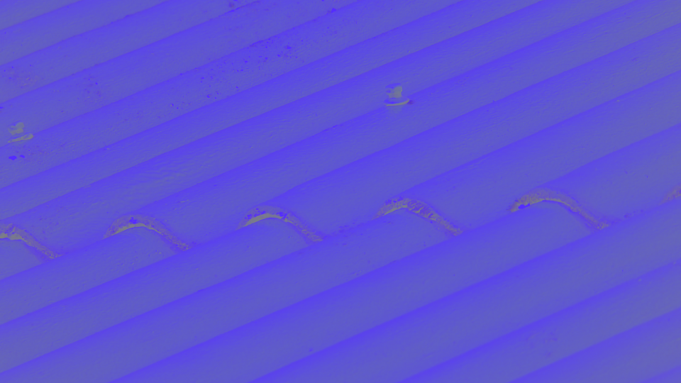
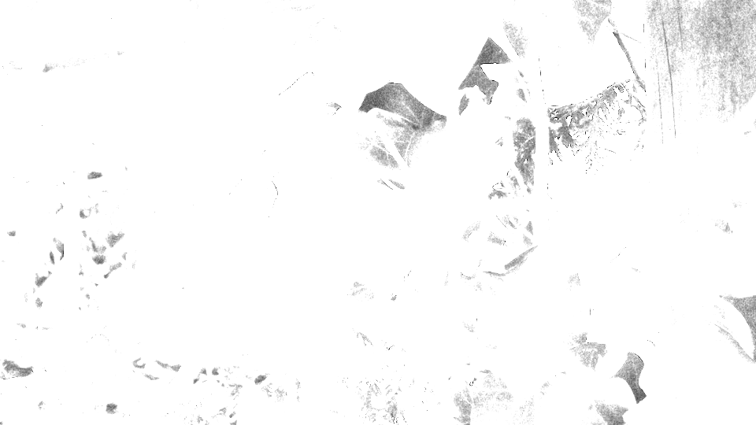

a: Helligkeitsinformationen werden vom menschlichen Sehsystem empfindlicher wahrgenommen als Farbinformationen. Daher ist es günstig, sie getrennt zu verarbeiten, um eine effizientere Bildverarbeitung zu ermöglichen.
b: Erstelle aus deinen eigenen Bildern Versionen, die nur jeweils den Rot-, Grün- und Blauanteil zeigen.
Code:
for(int y = 0; y < bmp.image.getHeight(); y++) {
for (int x = 0; x < bmp.image.getWidth(); x++) {
int rReduced = bmp.image.getRgbPixel(x,y).r * 0;
int gReduced = bmp.image.getRgbPixel(x,y).g * 0;
int bReduced = bmp.image.getRgbPixel(x,y).b ;
PixelColor pixel = new PixelColor(rReduced ,gReduced ,bReduced );
bmp.image.setRgbPixel(x,y,pixel);
}
}
c: umwandlung zu YCbCr bild
Y:
Cb:
Cr:
Code:
for(int y = 0; y < bmp.image.getHeight(); y++) {
for (int x = 0; x < bmp.image.getWidth(); x++) {
double Y = 0.299 * bmp.image.getRgbPixel(x,y).r + 0.587 * bmp.image.getRgbPixel(x,y).g + 0.114 * bmp.image.getRgbPixel(x,y).b;
double Cbr = 128 + (bmp.image.getRgbPixel(x,y).r * -0.169);
double Cbg = 128 + (bmp.image.getRgbPixel(x,y).g * -0.331);
double Cbb = 128 + (bmp.image.getRgbPixel(x,y).b * +0.5);
double Crr = 128 + (bmp.image.getRgbPixel(x,y).r * +0.5);
double Crg = 128 + (bmp.image.getRgbPixel(x,y).g * -0.419);
double Crb = 128 + (bmp.image.getRgbPixel(x,y).b * -0.081);
PixelColor pixel = new PixelColor(Cbr ,Cbg ,Cbb );
bmp.image.setRgbPixel(x,y,pixel);
}
}
(wir haben hierfür die klasse PixelColor von int zu double geändert, und dann für das jeweilige bild die nur Y, die cb werte oder die cr werte benutz)
d: Zurückwandlung
für diese aufgabe haben wir jeweils ein YcbCr bild(also ein bild das eine kombination aus Y, Cb und Cr war) wieder zurück zu Rgb verwandelt
Code:
for(int y = 0; y < bmp.image.getHeight(); y++) {
for (int x = 0; x < bmp.image.getWidth(); x++) {
double R = bmp.image.getRgbPixel(x,y).r + 1.403 * bmp.image.getRgbPixel(x,y).b;
double G = bmp.image.getRgbPixel(x,y).r - 0.714 * bmp.image.getRgbPixel(x,y).b - 0.344 * bmp.image.getRgbPixel(x,y).g;
double B = bmp.image.getRgbPixel(x,y).r + 1.773 * bmp.image.getRgbPixel(x,y).g;
PixelColor pixel = new PixelColor(R ,G ,B );
bmp.image.setRgbPixel(x,y,pixel);
}
}
die bilder sehen genau so aus wie vorher
Histogramme:
Code :
FileOutputStream foshis = new FileOutputStream("Histogram_Nature_Y.txt");
OutputStreamWriter oswhis = new OutputStreamWriter(foshis, "US-ascii");
BufferedWriter bwhis = new BufferedWriter(oswhis);
int[] histogram = new int[256];
for(int i = 0; i < 256; i++){
histogram[i] = 0;
}
for(int y = 0; y < bmp.image.getHeight(); y++) {
for (int x = 0; x < bmp.image.getWidth(); x++) {
Double yR = (bmp.image.getRgbPixel(x,y).r * 0.299) + 0;
Double yG = (bmp.image.getRgbPixel(x,y).g * 0.587) + 0;
Double yB = (bmp.image.getRgbPixel(x,y).b * 0.114) + 0;
int lumYint = yR.intValue() + yG.intValue() + yB.intValue();
histogram[lumYint] = histogram[lumYint] + 1;
}
}
for(int i = 0; i < histogram.length; i++){
bwhis.write(String.valueOf(histogram[i]));
bwhis.newLine();
}
bwhis.close();
oswhis.close();
foshis.close();
a:
Code mittlere Helligkeit:
int Helligkeitswertesum = 0;
int Bildpunkte = bmp.image.getHeight() * bmp.image.getWidth();
for(int y = 0; y < bmp.image.getHeight(); y++) {
for(int x = 0;x < bmp.image.getWidth(); x++) {
Helligkeitswertesum += bmp.image.getRgbPixel(x,y).r; //kann r, g oder b sein, macht keinen unterschied
}
}
int mittlereHelligkeit = Helligkeitswertesum/Bildpunkte;
System.out.println(mittlereHelligkeit);
die entstehenden Werte(also die Mittlere Helligkeit des Bildes) sind wie folgt: Nature hat 89 und manmade hat 153
Code Standardabweichung:
Double faktor1 = (1/(Double.valueOf(bmp.image.getWidth()) * Double.valueOf(bmp.image.getHeight())));
Double faktor2 = 0.0;
for(int y = 0; y < bmp.image.getHeight(); y++) {
for(int x = 0;x < bmp.image.getWidth(); x++) {
double yintensityMinusAverage = bmp.image.getRgbPixel(x,y).r - 153;
faktor2 += (yintensityMinusAverage * yintensityMinusAverage);
}
}
Double abweichung = faktor1 * faktor2;
Double Standardabweichung = Math.sqrt(abweichung);
System.out.println(Standardabweichung);
die entstehenden Werte für den Kontrast sind wie folgt: Nature hat 59.85706561800493 und manmade hat 21.29530940245519
b:
Dunkelste Bilder für Manmade und Nature (-80)
dazugehörige Histogramme
Hellste Bilder für Manmade und Nature (+80)
dazugehörige Histogramme

Code dunkler/heller:
int h = -80;
for(int y = 0; y < bmp.image.getHeight(); y++) {
for(int x = 0;x < bmp.image.getWidth(); x++) {
double rNew = bmp.image.getRgbPixel(x,y).r + h;
double gNew = bmp.image.getRgbPixel(x,y).g + h;
double bNew = bmp.image.getRgbPixel(x,y).b + h;
if((rNew <= 0 )){
rNew = 0;
gNew = 0;
bNew = 0;
}
if((rNew >= 255 )){
rNew = 255;
gNew = 255;
bNew = 255;
}
PixelColor pixel = new PixelColor(rNew,gNew,bNew);
bmp.image.setRgbPixel(x,y,pixel);
}
}
jeweils für h = -80 und 80,, um auf die hellsten und dunkelsten bilder zu kommen
c:
kontrastreichste Bilder für Manmade und Nature (10.0)

dazugehörige Histogramme
kontrastärmste bilder für Manmade und Nature (0.2)
dazugehörige Histogramme
wenn k ɘ ist, dann werden alle farben auf einen negativwert und somit in unserem code auf 0 gesetz, also ist das Bild komplett schwarz
Unterschied zwischen dem Histogramm der Helligkeitsveränderung und dem Histogramm der Kontraständerung:
die helligkeitsveränderung "verschiebt" das histogram nach links/rechst, während die kontraständerung die verteilung der Helligkeitswerte auch beinflusst
Code kontraständerung:
Double k = 0.2;
for(int y = 0; y < bmp.image.getHeight(); y++) {
for(int x = 0;x < bmp.image.getWidth(); x++) {
Double rNew = bmp.image.getRgbPixel(x,y).r * k;
Double gNew = bmp.image.getRgbPixel(x,y).g * k;
Double bNew = bmp.image.getRgbPixel(x,y).b * k;
if((rNew <= 0 )){
rNew = 0.0;
gNew = 0.0;
bNew = 0.0;
}
if((rNew >= 255 )){
rNew = 255.0;
gNew = 255.0;
bNew = 255.0;
}
PixelColor pixel = new PixelColor(rNew.intValue(),gNew.intValue(),bNew.intValue());
bmp.image.setRgbPixel(x,y,pixel);
}
}